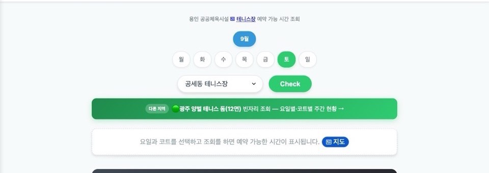
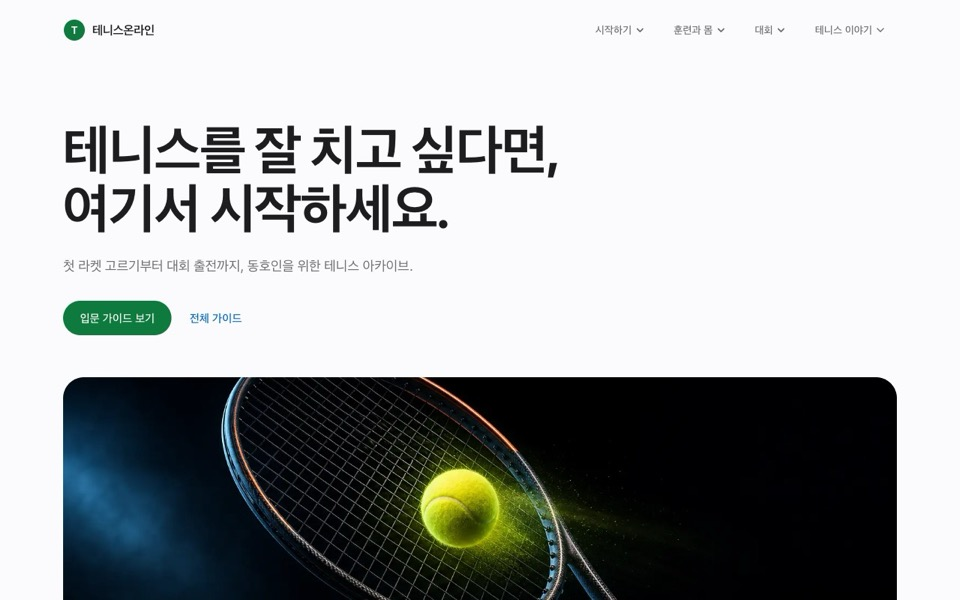
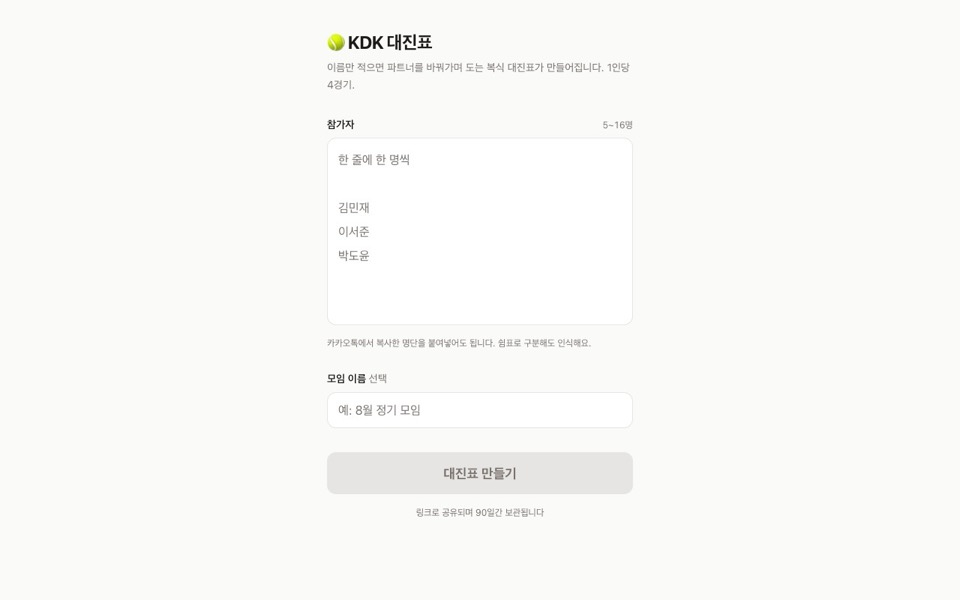
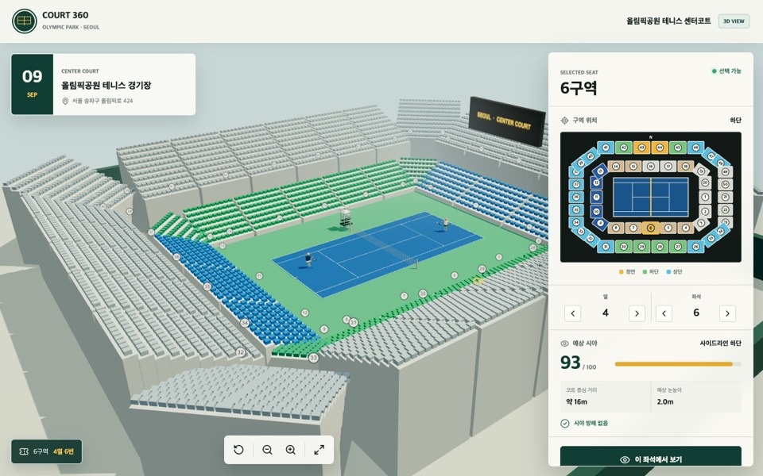

고재성
Full Stack Developer, Forward Deployed Engineer at Kakao
18년간 서비스를 만들어 왔습니다. 지금은 사내 서비스에 AI를 직접 심는 일을 합니다.
소개
카카오 FDE(Forward Deployed Engineer)로 사내 서비스의 AI 전환을 맡고 있습니다. 현업 조직 안에 들어가 LLM 기반 기능을 설계하고, 만들고, 배포합니다.
직전에는 커머스 데이터 엔지니어로 검색·추천 인프라 이관과 실시간 ETL을 구축했습니다. 그 전 5년은 콘텐츠 유통 플랫폼 개발 리더로 전사 콘텐츠 수집·분류·서빙 시스템을 이끌었습니다.
Daum 첫 화면 같은 대용량 트래픽 서비스부터 빌링, ML/LLM 분류, 배포 자동화까지 서비스 전 영역을 만들어 왔습니다. 업무 밖에서는 테니스 동호인을 위한 서비스를 직접 만들어 운영합니다.
AI 전환, FDE
메이커스 상품 댓글 AI 요약, 타겟팅 메시지와 이미지 AI 자동 생성. 실제 서비스에 붙여 운영합니다.
데이터 엔지니어링
검색 인프라 이관, Multi-Embedding ANN 전환 검증, 연관추천 피처스토어 확장, 실시간 ETL 신규 구축.
ML / LLM 분류
Tf-Idf, Word2Vec, ES Percolator, LLM 필터를 조합한 실시간 콘텐츠 분류와 저품질 콘텐츠 필터링.
대용량 트래픽과 인프라
Daum PC/모바일 첫 화면 전면 개편. Jenkins, Ansible, AWX 기반 대규모 배포와 롤백 자동화.
직접 만들어 운영하는 서비스

ytcc.info
용인시와 광주시 테니스장 빈 코트를 한 화면에서 조회. 시설마다 로그인해 찾던 불편을 없앴습니다.

테니스온라인
테니스 입문자가 필요한 정보를 한곳에 모은 사이트.

KDK 대진표
이름만 적으면 파트너를 바꿔가며 도는 복식 대진표가 만들어집니다.

COURT 360
올림픽공원 테니스 센터코트 예매 시 좌석별 관람 뷰를 미리 확인.
개인 AI 자동화
날씨, 운세, 뉴스를 LLM으로 요약해 매일 아침 Discord로 받습니다. AI를 일상 도구로 쓰는 실험.
경기 재난 화폐 맵 2020, 종료
재난기본소득 가맹점을 지도에 올린 개인 프로젝트. 공공데이터와 정적 페이지만으로 하루에 만들어 5일 만에 사용자 1,334명이 썼습니다. 발표 슬라이드
경력
Kakao
Full Stack Developer
Forward Deployed Engineer
2026.06 ~ 현재사내 서비스의 AX/DX 담당. 현업 조직과 밀착해 LLM 기반 기능을 설계, 구축, 배포합니다.
- 메이커스 상품 댓글 AI 요약
- 메이커스 상품 타겟팅 메시지 AI 생성
- 상품 이미지 AI 자동 생성
커머스 데이터 엔지니어
2025.08 ~ 2026.05- 프로모션빌더 검색 인프라 이관: 커머스 상품 프로모션 페이지 생성에 쓰이는 빌더를 Python에서 Kotlin으로 이전하고, 성능 효율화와 기능 개선을 함께 진행
- Multi-Embedding(MULTI_ANN) 전환 검증: 기능 동등성 검증, Filtered ANN 성능 벤치마크, 사용팀 마이그레이션 가이드로 전환 리스크 사전 제거
- 연관추천 피처스토어 확장: gift/talkstore 인덱스 필드 확장, 조인 배치 개선, force_merge ES 부하 개선
- 실시간 ETL 신규 구축: 클레임 DB와 배송 정시도착 데이터 실시간 수집 및 하둡 적재, 도착예측정보 ETL, 추천팀에 태그 피드백과 임베딩 데이터 제공
포털 콘텐츠 유통 플랫폼 개발 리더
2020.07 ~ 2025.08- 전사 콘텐츠를 통합 수집하고 주제별로 분류, 서비스, 추적하는 플랫폼과 운영툴 구축
- Tf-Idf, Word2Vec, ES Percolator, LLM 필터를 조합한 실시간 콘텐츠 분류 시스템 구축. RDB 필터를 Percolator로 전환해 필터 증가에 따른 성능 저하 해결
- Kafka 파이프라인의 데이터 흐름 추적 문제를 ELK 모니터링으로 해결, 디버깅과 CS 대응 효율 개선
- MongoDB 기반 콘텐츠 변경 이력 관리로 데이터 정합성 확보
Daum 첫 화면과 배포 시스템
2014 ~ 2020- Daum PC/모바일 첫 화면 백엔드, 프론트엔드, CMS 전면 개편. 캐싱, 비동기 처리, Lazy Loading으로 응답 속도 개선
- Shell 수작업 배포를 Jenkins, Ansible, AWX 기반 CI/CD로 전환. 배포 이력 추적과 롤백 자동화로 장애율 감소
- if(kakao) 2018 「다음 모바일 첫 화면 개선기」 발표
Daum Communications
Web Developer, 제주
- 서버 장애 관리 시스템 PL. 장애 티켓 발행부터 담당자 처리까지 추적, 장애 보고와 통계. 운영팀과 협업해 장애 대응 시간 약 30% 단축
- 수만 대 서버의 metric 그래프를 보여주는 모니터링 시스템 리뉴얼
이전 경력 2008 ~ 2010
HumusOn
Web Developer
- E-Mail/SMS 대량발송 시스템 postman.co.kr 개발 PL, 매출 통계
- 메일 도달률과 오픈률 트래킹 기반 타겟 마케팅으로 고객 반응률 20% 이상 개선
- LGU+ 기업용 E-Mail 청구서 시스템 구축
TmaxData
Database Engineer
- Tibero DB 마이그레이션, 쿼리 튜닝, 컨설팅. 교보생명 AML 프로젝트 DB 성능 약 30% 향상
TmaxSoft
Software Developer
- KT 번호이동 데이터 연계, 롯데JTB 항공 예약과 발권, 요금 정산(Billing), 해양경찰청 함정 정비시스템(PMS) 개발
기술
- AI / ML
- LLM 기반 요약, 생성, 분류, Multi-Embedding ANN, Tf-Idf, Word2Vec, ES Percolator
- Data
- Kafka, Hadoop, Elasticsearch, Kibana, 실시간 ETL, 피처스토어
- Back-End
- Java, Kotlin, Spring Framework, Spring JPA, Python
- Infra / DevOps
- Ansible, AWX, Jenkins, Docker, Kubernetes, Sentry, Linux
- Front-End
- JavaScript, Node.js, React, Express, Webpack
- Database
- MySQL, Oracle, MS-SQL, MongoDB, Redis
발표
다음 모바일 첫 화면 개선기
Daum 모바일 첫 화면 개편 프로젝트의 구조와 성능 개선 과정을 공유했습니다.